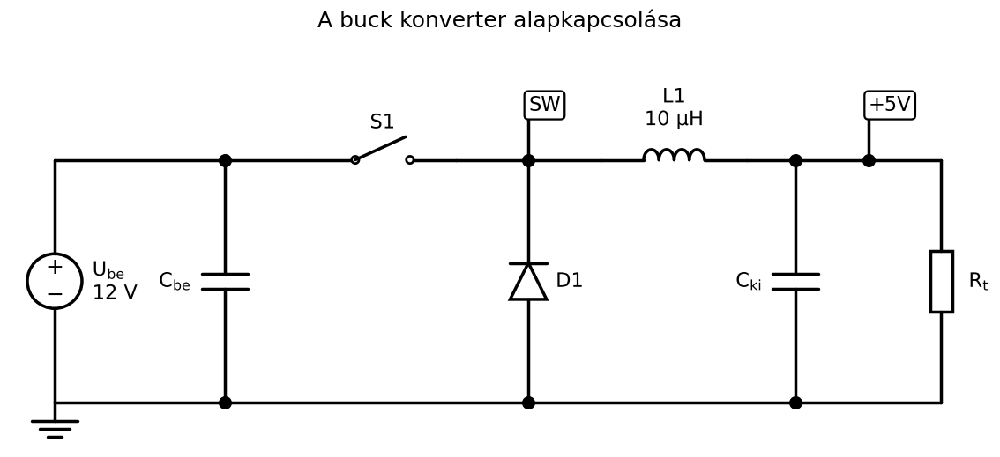
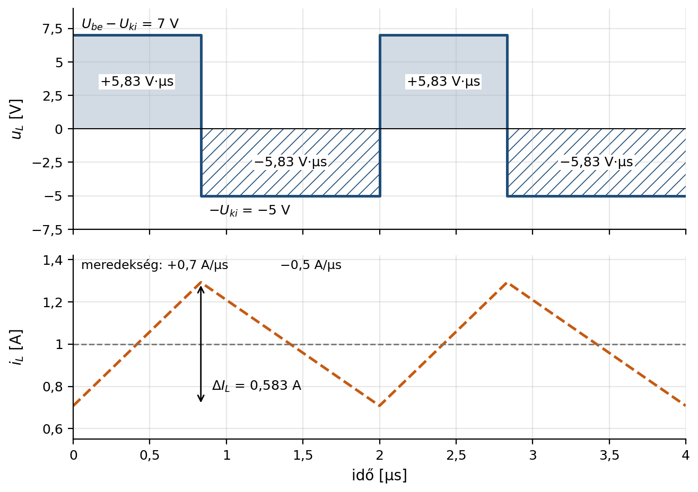
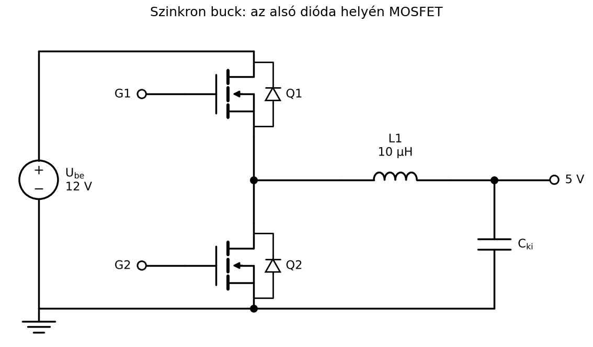
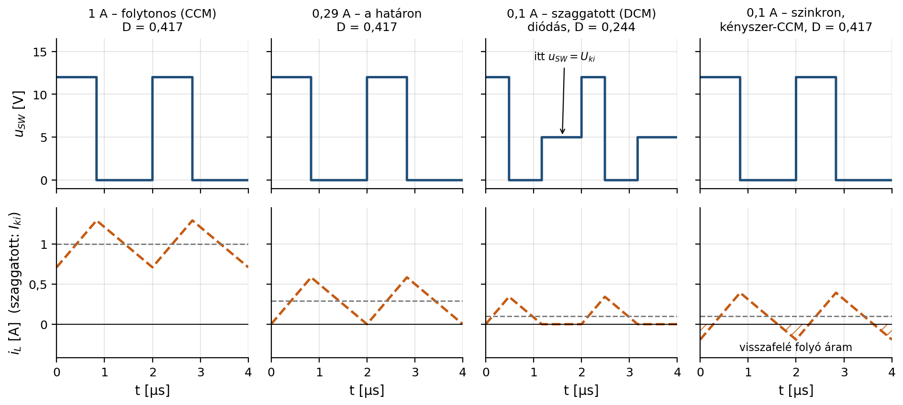
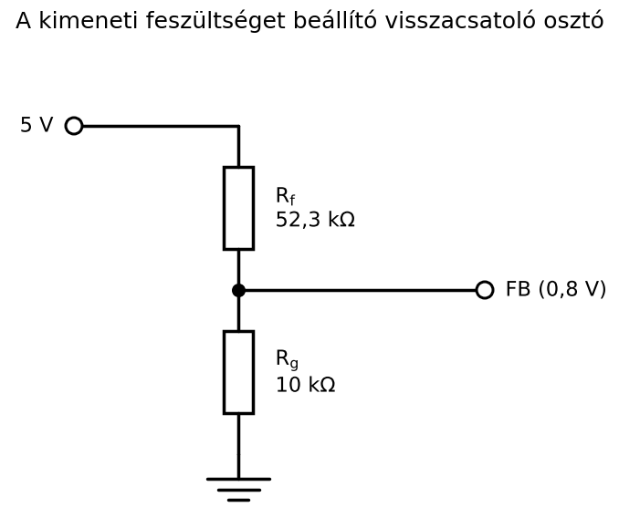

Ebben az alfejezetben megtanulod, hogyan csinál egy kapcsoló, egy
dióda, egy tekercs és egy kondenzátor 12 V-ból 5 V-ot szinte veszteség
nélkül. A végére:
levezeted az
összefüggést a tekercs volt-másodperc egyensúlyából;
kiszámolod a tekercsáram és a kimeneti feszültség hullámosságát, és
ebből tekercset és kondenzátort választasz;
megérted a folytonos és a szaggatott üzemet, a szinkron
egyenirányítás előnyét, és felismered a kapcsolás gyorsan változó áramú
„forró hurkát”.
19.1.1 Motiváció
A szenzormodul 12 V-os bemenetéből kell előállítani az 5 V-os sínt,
amely legfeljebb 0,5 A-t ad le (a tekercset és a kondenzátorokat
tartalékkal 1 A-re tervezzük). A Teljesítménymérleg, lineáris szabályzó és LDO
alfejezetben láttuk: egy lineáris szabályzó a feszültségkülönbséget hővé
alakítja. Itt ez
W hő, a hatásfok pedig csak
%. Egy kis tokban 3,5 W-ot elvezetni nehéz.
Van egy jobb ötlet. Egy ideális kapcsoló nem
melegszik: zárva nincs rajta feszültség, nyitva nem folyik rajta áram,
tehát a szorzatuk mindkét állapotban nulla. Ha a 12 V-ot gyorsan ki-be
kapcsolgatjuk, és az eredményt kisimítjuk, az átlag a bemenetnél kisebb
lesz, és elvben nem veszik el energia. Ez a
kapcsolóüzemű (switching) átalakító.
Feszültségcsökkentő változata a buck konverter (ejtsd:
bak).
19.1.2 Szemlélet
A kapcsoló (a gyakorlatban MOSFET) másodpercenként több százezerszer
zár és nyit. A periódusidő
,
ahol
a kapcsolási frekvencia (a szenzormodulban 500 kHz,
azaz
µs). Azt, hogy a perióduson belül mennyi ideig van zárva a kapcsoló, a
kitöltési tényező (duty cycle) adja meg.
Definíció. A kitöltési tényező
,
ahol
a kapcsoló zárt állapotának időtartama egy perióduson belül;
.
A kapcsoló kimenete, a kapcsolócsomópont (switch
node, jele SW) négyszögjelet kap. Ezt egy LC szűrő
simítja: a tekercs nem engedi, hogy az árama ugorjon, a kondenzátor
pedig nem engedi, hogy a feszültsége ugorjon (a „feszültség a
kondenzátoron, az áram az induktivitáson nem ugorhat” elv, RC és RL töltés–kisütés, időállandó).

A buck konverter alapkapcsolása - S1 a
kapcsoló (MOSFET), D1 a szabadonfutó dióda, L1 és C_ki a
szűrő
Egy perióduson két szakasz követi egymást:
S1 zárva
().
A SW pont
-n
van, a dióda zár. A tekercsen
feszültség esik, az árama nő. Az áramot a bemenet,
pontosabban a hozzá legközelebbi
kondenzátor adja.
S1 nyitva
().
A tekercs árama nem szakadhat meg: a SW pont feszültsége leesik, amíg a
D1 dióda kinyit (ugyanaz a szabadonfutás, mint a relénél, Biztonságos működési tartomány, lavina és induktív
terhelés). A tekercsen most
van, az árama csökken, a földtől a diódán át
folyik.
Gondolkodj előre: ha a kapcsoló az idő 40 %-ában
zárt, mekkora lesz körülbelül a kimenet? És mi történne, ha a D1 diódát
kihagynád? (A válasz a következő szakaszban, illetve a Tipikus
hibáknál.)
Statikus változat (mint a PDF-ben)
A buck két szakaszának áramútja és a gyorsan változó áramú
hurok
Az ábrán a zárt szakasz árama szaggatott, a nyitotté pont-vonal.
Mindkét esetben a tekercsen és a kimeneten ugyanarra folyik az áram –
minden áramnak van visszatérő útja –, csak a bal oldali
hurok változik.
Analógia: a tekercs olyan, mint egy lendkerék. Rövid lökéseket kap,
de egyenletesen forog tovább. Az analógia korlátja: a lendkerék a
sebességét szinte tetszőleg ideig tartja, a tekercs árama viszont
terheléssel együtt percek helyett mikroszekundumok alatt változik.
19.1.3 Formalizmus: a két szakasz
és a volt-másodperc egyensúly
A levezetés feltevései: a kapcsoló és a dióda
ideális (nincs rajtuk feszültségesés), a kimeneti
feszültség egy perióduson belül gyakorlatilag állandó (ezt utólag
ellenőrizzük), és a tekercs árama sosem éri el a nullát.
A tekercsre
.
Állandó feszültségnél az áram egyenletesen változik:
.
Állandósult állapotban (steady state) minden
periódus ugyanolyan: az áram a periódus végén oda tér vissza, ahonnan
indult, tehát
.
Ebből
Szavakkal: az ideális buck kimenete a bemenet
-szerese,
függetlenül a terheléstől és az
,
értékétől – amíg a feltevések érvényesek. A 40 %-os kitöltés 12 V-ról
tehát 4,8 V-ot ad.
Definíció. A volt-másodperc
egyensúly (volt-second balance): állandósult állapotban a
tekercs feszültségének egy periódusra vett „feszültség–idő területe”
nulla, azaz a tekercs átlagfeszültsége nulla.

A volt-másodperc egyensúly: a pozitív és a negatív terület
egyenlő
Az ábrán a 833 ns-ig tartó +7 V területe ugyanakkora, mint az 1167
ns-ig tartó −5 V-é (5,83 V·µs). Mértékegység:
,
tehát az áramváltozás valóban amper.
Továbbvitt eredmény. A volt-másodperc egyensúly
(
átlaga nulla) minden tekercses átalakítóban érvényes; a boost és az
invertáló átalakítót ezzel vezetjük le a Boost,
buck-boost, invertáló átalakító és töltéspumpa alfejezetben.
19.1.3.1 Töltésegyensúly: a
tekercsáram átlaga
A kimeneti kondenzátorra ugyanilyen érv szól: ha a feszültsége
periódusról periódusra nem vándorol, akkor egy perióduson a beáramló és
a kiáramló töltés egyenlő, vagyis
átlaga nulla (töltésegyensúly, charge balance). Mivel
,
a tekercsáram átlaga éppen a terhelőáram:
.
19.1.3.2 Áramhullámosság, csúcsáram
és telítés
A tekercsáram háromszög alakú; csúcstól csúcsig mért változása a
hullámosság (ripple):
A háromszöggel ráültetett áram effektív értéke (Szinuszjel, effektív érték és fázis)
.
Szavakkal: nagyobb induktivitás vagy frekvencia kisebb hullámosságot ad;
a feszültségkülönbség növelése nagyobbat.
a telítési áram
a csúcsáramnál nagyobb legyen, de nem elég a névleges terhelésnél:
túlterheléskor és induláskor a vezérlő áramkorlátjáig
(current limit) nőhet az áram, ezért
-nak
az áramkorlát felett kell lennie, meleg tekercsre is;
a melegedési áram
az effektív áramnál nagyobb legyen.
Az induktivitás kiindulóértéke: válassz
-t
a legnagyobb terhelőáram 20–40 %-ára (hüvelykujjszabály, nem törvény),
és számold ki
-et.
A legnagyobb hullámosság a legnagyobb bemeneti
feszültségen adódik.
19.1.3.3 Kimeneti hullámosság:
kapacitív és ESR-rész
A tekercs a háromszög alakú
áramot adja a kimeneti kondenzátornak. Amíg
pozitív, a kondenzátor töltődik. Ez a periódus fele, a háromszög
magassága
,
tehát a bevitt töltés a háromszög területe:
Mértékegység:
.
A valós kondenzátor soros ellenállásán (A valós
kondenzátor: ESR, ESL, önrezonancia, élettartam) még
feszültség esik. A két rész nem egyszerre éri el a csúcsát (az ESR-rész
az árammal, a kapacitív rész az áram integráljával változik), ezért az
összeg csak felső becslés:
Hasonlóan a soros induktivitáson (ESL)
kis ugrás jelenik meg minden kapcsoláskor; 500 kHz-en kerámiánál ez
néhány tized millivolt. A
mindig a tényleges kapacitás az adott
egyenfeszültségen: a szenzormodul
µF X5R kondenzátora 5 V-on a mintamodell szerint csak
µF.
Statikus változat (mint a PDF-ben)
Buck hullámformák két perióduson: u_SW, i_L, i_C és a
kimeneti hullámosság
Figyeld meg az ábrán: a kapacitív rész (vékony vonal) parabolaívekből
áll, a csúcsa ott van, ahol
nullát vált; az ESR-rész (szaggatott) az áram alakját követi; a teljes
görbe kis ugrásai az ESL-ből jönnek.
Ha a terhelés csökken, a háromszög lejjebb csúszik, de az alakja nem
változik. Egy ponton az alja eléri a nullát.
Definíció.Folytonos üzemben (CCM,
continuous conduction mode) a tekercsáram végig pozitív;
szaggatott üzemben (DCM, discontinuous conduction mode)
a periódus egy részében nulla. A határ:
.
Diódás átalakítóban az áram nem fordulhat meg, ezért DCM-ben három
szakasz van: S1 zárva
(),
a dióda vezet
(),
majd szünet, amikor mindkettő zár, és a SW pont az
-re
áll (a valóságban itt a parazita kapacitások miatt csillapodó lengés
látszik). Ekkor a volt-másodperc egyensúly
,
a töltésegyensúly pedig
,
ahol
.
A kettőből,
és
jelöléssel:
A szabályzónak tehát könnyű terhelésen kisebb
kell ugyanahhoz a kimenethez. Ha a
-t
nem csökkentenénk, a kimenet megemelkedne: ellenállásos
terhelésnél
,
ahol
.
Nagyon kis terhelésen sok vezérlő impulzusüzembe vált
(PFM, pulse-frequency modulation): ritkábban kapcsol, csak amikor a
kimenet a küszöb alá esik. Ez kevesebb veszteséggel jár, de a
hullámosság nagyobb és a frekvencia változó lesz.
19.1.3.5 Szinkron
egyenirányítás
1 A-nél a diódán a nyitott szakaszban
V esik (DS1 mintaadat), a veszteség
W. A szinkron egyenirányítás (synchronous
rectification) a diódát egy második MOSFET-re cseréli, amelyet a vezérlő
éppen akkor nyit ki, amikor a dióda vezetne:

Szinkron buck: az alsó dióda helyén
MOSFET - Q1 és Q2 nem vezethet egyszerre; holtidőben Q2 test-diódája
vezet
A Q2 vezetési vesztesége
a nyitott szakaszra: 35 mΩ-nál (MN1 mintaadat)
mW – a diódás megoldás tizenketted része. Cserébe:
a MOSFET mindkét irányba vezet, ezért könnyű terhelésen az áram
negatív is lehet (kényszerített folytonos üzem, forced
CCM): állandó frekvencia, de felesleges veszteség. A vezérlők ilyenkor
„diódát utánoznak” (diode emulation), azaz nullaáramnál kikapcsolják
Q2-t;
a felső n-csatornás MOSFET gate-jének
fölé kell menni; ezt egy segédkondenzátor (bootstrap) oldja meg – az
integrált vezérlők adatlapja megadja az értékét.

Folytonos, határ-, szaggatott és kényszerfolytonos
üzem
19.1.3.6 A „forró hurok”
Nézd meg az interaktív ábrán, melyik áram ugrik. A
tekercs és a kimenet árama folytonos háromszög. A kapcsoló és a dióda
árama viszont nanoszekundumok alatt vált nulla és
között. Az ugrás a
– S1 – D1 (Q2) hurokban folyik: ez a forró
hurok (hot loop). Minden vezetékhuroknak van parazita
induktivitása
(),
és a rajta eső feszültség
.
Ha
nH és 1,29 A 3 ns alatt szűnik meg, az
V; 10 nH-nél és 2 ns-nál már
V, ami a 12 V-os SW pontra ráülve a kapcsolót 18 V fölé viheti, és
sugárzó zajt kelt. A hurokterület a zaj antennája.
A valós vezérlő nem rögzített
-vel
dolgozik: egy visszacsatoló osztón méri a kimenetet, és összehasonlítja
egy belső
referenciával. A szabályzás addig állítja
-t,
amíg az osztó kimenete
nem lesz. Feszültségmódusú (voltage mode) vezérlésben a
hibajel egy fűrészfogjellel összehasonlítva adja a
-t.
Árammódusú (current mode) vezérlésben a hibajel a
tekercs csúcsáramát írja elő, és a kapcsoló akkor nyit,
amikor az áram eléri; ez gyorsabb, és egyben ciklusonkénti áramkorlát. A
visszacsatoló kör stabilizálását (kompenzálását) a könyv nem tárgyalja;
az integrált vezérlők adatlapja megadja az ajánlott
és
tartományt, ettől ne térj el indok nélkül.

A kimeneti feszültséget beállító
visszacsatoló osztó - U_ki = U_ref·(1 + R_f/R_g); U_ref = 0,8 V
mintaadat
Ha a visszacsatoló láb árama elhanyagolható, ez egy feszültségosztó
(Feszültségosztó, áramosztó és a terhelés
hatása):
.
kΩ mellett
kΩ kellene; a legközelebbi E96-os érték 52,3 kΩ, ezzel
V.
Áramhullámosság
():
A. A csúcs
A, a völgy
A, az effektív érték
A.
Tekercs: az L10u_3A mintatekercs
(
A,
A, DCR 45 mΩ) bőven megfelel; a vezérlő 2,5 A-es csúcsáramkorlátjánál
(mintaadat) is csak 66 %-on van. Az L10u_2A
(
A) névlegesen elég volna, de túlterheléskor, az áramkorlátnál telítődne
(Valós induktivitás és ferritgyöngy).
Hullámosság:
mV;
mV; a kettő összege (7,6 mV) csak felső becslés. A hullámformákból, az
ESL-lel együtt számolva 5,9 mV csúcstól csúcsig, a
kimenet 0,12 %-a – az „állandó kimenet” feltevés jogos.
Bemeneti tartomány: 9 V-on
A, 16 V-on
A, a csúcs ekkor 1,34 A.
CCM-határ:
A. A tápfa-mérleg szerint a +5V sín tipikusan csak
A-t ad: a modul tehát a legtöbb időben könnyű
terhelésen jár (DCM, impulzusüzem vagy kényszer-CCM – a vezérlő
adatlapja dönti el).
Józanész-ellenőrzés: ideális esetben a bemeneti teljesítmény 5 W, így
a bemeneti átlagáram
A. Ez éppen
,
hiszen a bemenet csak a zárt szakaszban ad áramot.
19.1.5 Kód
from elkit import parts, power, unitsfrom elkit import szenzormodul as smc_teny =2* parts.mlcc("22u_0805_X5R_10V").capacitance(sm.U_5V) # mintaadatprint("tényleges C:", units.fmt(c_teny, "F"))for u_be in (sm.U_BE_MIN, sm.U_BE, sm.U_BE_MAX): op = power.buck(u_in=u_be, c=c_teny, esr=2e-3)print(f"U_be = {u_be:4.1f} V: D = {op.duty:.3f}, ΔI = {op.di_l:.3f} A, "f"csúcs = {op.i_l_peak:.3f} A, határ = {op.i_crit:.3f} A")op = power.buck(c=c_teny, esr=2e-3)w = power.waveforms(op, periods=1, points=4000, esl=0.4e-9) # az ESL-ugrással együttdu = w["ripple"].max() - w["ripple"].min()print(f"ΔU_C = {op.du_c *1e3:.2f} mV, ΔU_ESR = {op.du_esr *1e3:.2f} mV, "f"ESL-lel együtt {du *1e3:.2f} mV")r_f, r_g =52.3e3, 10e3print(f"U_ki az osztóval: {0.8* (1+ r_f / r_g):.3f} V")
tényleges C: 22.9 µF
U_be = 9.0 V: D = 0.556, ΔI = 0.444 A, csúcs = 1.222 A, határ = 0.222 A
U_be = 12.0 V: D = 0.417, ΔI = 0.583 A, csúcs = 1.292 A, határ = 0.292 A
U_be = 16.0 V: D = 0.312, ΔI = 0.688 A, csúcs = 1.344 A, határ = 0.344 A
ΔU_C = 6.37 mV, ΔU_ESR = 1.17 mV, ESL-lel együtt 5.95 mV
U_ki az osztóval: 4.984 V
Most szimuláljuk a kapcsolást az
elkit.transient időléptető megoldójával, ideális
kapcsolóval és ideális diódával. A képlet nem tud a szimulációról, tehát
ez független ellenőrzés. Utána ugyanazzal a
-vel
tízszer kisebb terhelést (50 Ω) kapcsolunk rá. Gondolkodj
előre: marad 5 V?
R = 5 Ω: U_ki = 4.999 V, ΔU = 5.94 mV, i_L: 0.708 … 1.292 A
R = 50 Ω: U_ki = 7.13 V (képlet: 7.13 V), i_L: 0.000 … 0.406 A
Az első sor egyezik a kézi számítással (a maradék eltérés a kapcsolók
1 mΩ-os soros ellenállásából és a véges lépésközből ered). A lépésszám
240, hogy a
éppen egész számú lépés legyen: 10 ns-os lépéssel a kapcsoló 833 ns
helyett 830 ns-ig zárna, és a kimenet 21 mV-tal alacsonyabb volna. A
második sor a tanulság: a szabályzás nélküli buck könnyű terhelésen
7 V fölé szaladna.
19.1.6 Próbáld ki
Hullámformák, alapállás. Játszd le a
hullámforma-ábrát, majd húzd
-t
0,25-re és 0,75-re. Mit csinál
,
és mikor a legnagyobb
?
(Kulcs: a
szorzat.)
Induktivitás és frekvencia. Felezd meg
-et,
majd duplázd meg
-t.
Miért ad ugyanakkora
-t
a két változtatás, de a hullámosság a második esetben mégis feleakkora?
(Nézd a
-t
és az
-t
a
képletben.)
CCM–DCM. Diódás üzemben csökkentsd
-t
0,1 A-re: figyeld meg a szünetet és a kimenet elmászását. Válts szinkron
üzemre: mi történik a völgyárammal?
Áramutak. Az áramút-ábrán kapcsold be a „forró
hurok” kiemelést, és nézd végig, mely ágakban folyik áram mindkét
szakaszban, és melyikben csak az egyikben.
19.1.7 Tipikus hibák
Tünet: túlterheléskor a kapcsoló tönkremegy, pedig
a névleges áram elfér. Ok: a tekercs a csúcsáramnál
vagy az áramkorlátnál telítődik, az induktivitás összeomlik, az áram
meredeken nő. Javítás:
áramkorlát, meleg tekercsre.
Tünet: a mért hullámosság kétszerese a számoltnak.
Ok: a névleges kapacitással számoltál, pedig az X5R/X7R
kerámia egyenfeszültségen sokat veszít. Javítás:
DC-bias görbe, és a tényleges
.
Tünet: nagy tüskék a SW ponton, a kapcsoló
melegszik vagy letör. Ok: hosszú forró hurok, a
messze van a kapcsolóktól. Javítás: a
közvetlenül a vezérlő bemeneti lábainál; ezt a rajzon kényszerként kell
előírni.
Tünet: bekapcsoláskor azonnali hiba.
Ok: hiányzó vagy fordítva beültetett D1 (aszinkron
vezérlőnél): a tekercsáramnak nincs útja, a SW pont nagy negatív
feszültségre ugrik. Javítás: Schottky-dióda a vezérlő
közvetlen közelében, helyes polaritással.
Félreértés: „a kimenet mindig
”.
Csak ideális elemekkel és folytonos üzemben igaz; a veszteség miatt a
valós
kissé nagyobb, szaggatott üzemben pedig jóval kisebb.
19.1.8 Önellenőrzés
Miért nulla a tekercs átlagfeszültsége állandósult állapotban?
Mekkora a tekercsáram átlaga, és miért?
Melyik bemeneti feszültségen a legnagyobb a buck
áramhullámossága?
Mi a különbség a CCM és a DCM között, és hol a határ?
Mely ágak alkotják a forró hurkot, és miért „forró”?
19.1.9 Feladatok
(A) Egy buck 24 V-ból 3,3 V-ot állít elő 400
kHz-en. Mekkora
és
ideális esetben?
(A) 12 V → 3,3 V,
µH,
MHz,
A. Számold ki
-t
és a csúcsáramot, és döntsd el, folytonos-e az üzem.
(B) 12 V → 5 V, legfeljebb 2 A, 500 kHz, a
hullámosság a legnagyobb áram 30 %-a. Válassz E6-os induktivitást, és
ellenőrizd 16 V-os bemeneten, hogy az L10u_2A vagy az L10u_3A
mintatekercs megfelel-e, ha a vezérlő áramkorlátja 3 A.
(B) Az előző feladat kimenetén legfeljebb 20 mV
hullámosság engedett,
mΩ. Mekkora tényleges kapacitás kell? Elég-e egy 22u_0805_X5R_10V
mintakondenzátor?
(B) A szenzormodul bucka diódás,
mA, a vezérlő tartja az 5 V-ot. Számold ki
-t,
-t,
a csúcsáramot és a szünet hosszát.
(C, programozás) Keresd meg
elkit.power.buck-kal a legkisebb E6-os induktivitást,
amellyel
A a teljes 9–16 V-os tartományban (500 kHz, 5 V).
(C) Egy kezdő fix
-es,
visszacsatolás nélküli PWM-mel hajtja a bucköt, és az 5 V-ra köti a 3,3
V-os LDO-t (a fiktív XL3300-at), amelynek abszolút legnagyobb bemenete
6,5 V (mintaadat). Mi történik könnyű terhelésen, és hogyan előzöd
meg?
19.1.10 Rövid összefoglaló
A buck konverter kapcsolóval, diódával (vagy alsó MOSFET-tel) és
LC-szűrővel csökkenti a feszültséget. Állandósult állapotban a tekercs
átlagfeszültsége nulla (volt-másodperc egyensúly), a kondenzátor
átlagárama nulla, ebből folytonos üzemben
és
.
A hullámosság
,
a kimeneten
és
.
A tekercset a csúcsáramra és az áramkorlátra
(),
illetve az effektív áramra
()
kell ellenőrizni, a kondenzátort a tényleges, DC-bias melletti
kapacitással.
esetén diódás üzemben szaggatott üzem van; a szinkron egyenirányítás
kisebb veszteséget ad. A gyorsan változó áramú forró hurok
(
– kapcsolók) legyen a lehető legkisebb, mert a parazita induktivitásán
feszültségtüske keletkezik. A volt-másodperc egyensúlyt a boost és az
invertáló átalakítónál, a hullámosságképleteket és a forró hurkot a
veszteségek, a zaj és a záróprojekt tápegységének tervezésekor
használjuk tovább.
19.1.11 Megoldások
;
µs,
ns. Rövid impulzus: ellenőrizni kell a vezérlő legkisebb bekapcsolási
idejét.
;
,
A;
A. A határ 0,25 A, tehát folytonos az üzem.
A,
µH → 10 µH. 16 V-on
,
A, csúcs 2,34 A,
A. Az L10u_2A nem jó:
A alatta van, és
A a csúcsnál is kisebb. Az L10u_3A
(
A
3 A áramkorlát,
A) megfelel.
Az ESR-rész
mV (16 V-on, 0,69 A-nél 3,4 mV), a kapacitívra kb. 16,6 mV marad:
µF. Egy 22 µF-os mintakondenzátor 5 V-on 11,4 µF-ot ad:
mV, a felső becslés 18,5 mV – éppen elég, de a tűrés és a hőmérséklet
miatt kettő a biztonságos (terhelésugrásra is, lásd Hatásfok, veszteségek, alkatrészválasztás és
kapcsolóüzemű zaj).
;
;
,
ns; csúcs
A.
,
a szünet
µs
µs.
A legrosszabb eset 16 V:
µH → E6: 22 µH.
for l_uh in (6.8, 10, 15, 22, 33): di =max(power.buck(u_in=u, l=l_uh *1e-6).di_l for u in (9.0, 12.0, 16.0))print(f"L = {l_uh:4.1f} µH: legnagyobb ΔI = {di:.3f} A {'megfelel'if di <=0.4else''}")if di <=0.4:break
L = 6.8 µH: legnagyobb ΔI = 1.011 A
L = 10.0 µH: legnagyobb ΔI = 0.688 A
L = 15.0 µH: legnagyobb ΔI = 0.458 A
L = 22.0 µH: legnagyobb ΔI = 0.312 A megfelel
Könnyű terhelésen szaggatott üzem alakul ki, és rögzített
mellett a kimenet a bemenet felé mászik (50 Ω-nál 7 V fölé, még kisebb
terhelésnél tovább). Ez túllépi az LDO 6,5 V-os abszolút határértékét:
az abszolút határérték nem üzemi tartomány, a rész
tönkremegy. Megelőzés: visszacsatolt vezérlő, amely
-t
csökkenti (vagy impulzust hagy ki), szükség esetén kimeneti
túlfeszültség-védelem. Fix PWM-es buck csak ismert, mindig elég nagy
terhelésnél elfogadható.
19.1.11.1 Válaszok az önellenőrző
kérdésekre
Ha nem volna nulla, az áram minden periódusban ugyanannyit nőne
(vagy csökkenne), és nem térne vissza a kiindulóértékre – nem lenne
állandósult állapot.
Az átlag
,
mert a kondenzátor átlagárama nulla (töltésegyensúly).
A legnagyobb bemeneti feszültségen, mert
,
és ott a legkisebb
.
CCM-ben az áram végig pozitív, DCM-ben a periódus egy részében
nulla; határa
.
A bemeneti kondenzátor, a felső kapcsoló és a dióda (alsó MOSFET).
Az áramuk nanoszekundumok alatt ugrik, ezért a parazita induktivitáson
nagy feszültségtüske keletkezik, és a hurok sugároz.